Linear Profile¶
Description¶
A complete enumeration of all linear approximations of the S-box is given in the Linear Profile (In the literature, an equivalent matrix called Linear Approximation Table is used as well), which is a matrix whose rows are indexed by  and whose columns are indexed by
and whose columns are indexed by  in lexicographic order, denoted by 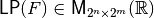. It holds that
in lexicographic order, denoted by 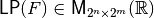. It holds that  . The lower bound of the Linear Profile values is 0 and the upper bound is 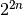.
. The lower bound of the Linear Profile values is 0 and the upper bound is 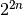.
If we divide each element in the Linear Profile by the value on , these values represent the number of matches between the linear equation represented in hexadecimal as “Input Sum” and the sum of the output bits represented in hexadecimal as “Output Sum”. Hence, subtracting to these values  give the probability bias for the particular linear combination of input and output bits. The hexadecimal value representing a sum, when viewed as a binary value indicates the variables involved in the sum. For a linear combination of input variables represented as 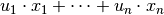 where 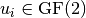, the hexadecimal value represents the binary value 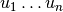, where
give the probability bias for the particular linear combination of input and output bits. The hexadecimal value representing a sum, when viewed as a binary value indicates the variables involved in the sum. For a linear combination of input variables represented as 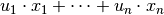 where 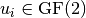, the hexadecimal value represents the binary value 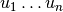, where  is the most significant bit. Similarly, for a linear combination of output bits 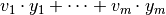 where 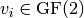, the hexadecimal value represents the binary vector 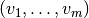.
is the most significant bit. Similarly, for a linear combination of output bits 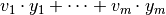 where 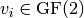, the hexadecimal value represents the binary vector 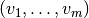.
In Linear Profiles, we are looking for entries with large value. If all of the entries are small, then the S-box does not have a very linear structure, and it may make Linear Cryptanalysis on the cipher difficult. The Linear potential of F, defined as 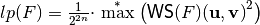 is a measure of linearity in Linear Cryptanalysis, and satisfies 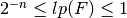 so that the lower bound holds if and only if F has maximum nonlinearity (F is bent) and the upper bound is reached when F is linear or affine. This criterion can take values from  to 1. The larger is, the “closer” to a Linear Vector Boolean function is F.
to 1. The larger is, the “closer” to a Linear Vector Boolean function is F.
Library¶
Note that the Linear Profile does not uniquely determine a Vector Boolean function. Thus, a VBF class cannot be initialized by its Linear Profile. To obtain its representation as Linear Profile, the following method must be used:
void LAT(NTL::mat_ZZ& LP, VBF& F)
In the VBF library, several methods have been defined in order to analyse the feasibility of Linear Cryptanalysis: Linear potential and Linear relations associated with a specific value of the Linear Profile. The method used to obtain the linear potential is the following:
void lp(NTL::RR& x, VBF& F)
If we want to obtain the linear expressions associated with the value of the Linear Profile “w”, we will use this method:
void linear(NTL_SNS ostream& s, VBF& a, ZZ& w)
If we want to obtain the probability bias 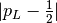 that a linear expression holds with the value of the Linear Profile “w”, we will use this method:
void ProbLin(NTL::RR& x, VBF& a, NTL::ZZ& w)
Example¶
The following program finds out the Linear Profile of a Vector Boolean function together with the linear expressions that have the highest value, except from the value in , their probability, this highest value and the linear potential.
#include <iostream>
#include <fstream>
#include "VBF.h"
int main(int argc, char *argv[])
{
using namespace VBFNS;
VBF F;
NTL::mat_GF2 T;
NTL::ZZ w;
NTL::RR bias;
ifstream input(argv[1]);
if(!input) {
cerr << "Error opening " << argv[1] << endl;
return 0;
}
input >> T;
F.puttt(T);
input.close();
cout << "The Linear Profile is:" << endl;
cout << LAT(F) << endl;
w = maxLAT(F);
cout << endl << "The highest value of the Linear Profile is= "
<< w << endl << endl;
cout << "The linear expressions that have the highest value are:"
<< endl;
linear(cout,F,w);
ProbLin(bias,F,w);
cout << endl;
cout << "These expressions hold with probability bias= "
<< bias << endl;
cout << endl << "The linear potential is= " << lp(F) << endl;
return 0;
}
If we use as input of this program the Truth Table of NibbleSub, the output of the program would be the following:
The Linear Profile is:
[[256 0 0 0 0 0 0 0 0 0 0 0 0 0 0 0]
[0 0 16 16 0 0 16 144 16 16 0 0 16 16 0 0]
[0 0 16 16 0 0 16 16 0 0 16 16 0 0 144 16]
[0 0 0 0 0 0 0 0 16 144 16 16 16 16 16 16]
[0 16 0 16 16 64 16 0 0 16 0 16 16 64 16 0]
[0 16 16 0 16 0 64 16 16 0 64 16 0 16 16 0]
[0 16 16 64 16 0 0 16 0 16 16 64 16 0 0 16]
[0 16 0 16 16 64 16 0 16 0 16 0 64 16 0 16]
[0 0 0 0 0 0 0 0 16 16 16 16 16 16 16 144]
[0 0 16 16 0 0 16 16 64 0 16 16 0 64 16 16]
[0 64 16 16 64 0 16 16 16 16 0 0 16 16 0 0]
[0 64 0 64 64 0 64 0 0 0 0 0 0 0 0 0]
[0 16 64 16 16 0 16 0 16 0 16 64 0 16 0 16]
[0 16 16 0 16 64 0 16 64 16 16 0 16 0 0 16]
[0 16 16 0 16 64 0 16 16 0 0 16 64 16 16 0]
[0 16 64 16 16 0 16 0 0 16 64 16 16 0 16 0]
]
The highest value of the Linear Profile is= 144
The linear expressions that have the highest value are:
x4=y2+y3+y4
x3=y1+y2+y3
x3+x4=y1+y4
x1=y1+y2+y3+y4
These expressions hold with probability bias= 0.0625
The linear potential is= 0.5625
The figure represents the Linear Profile of NibbleSub and emphasizes in red the elements which achieve the highest value.